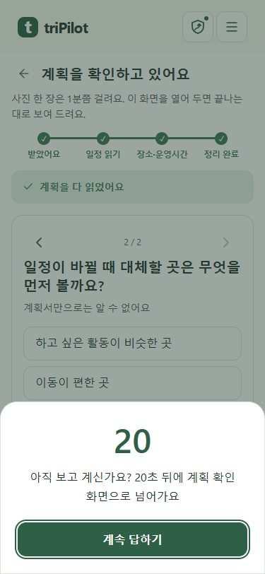
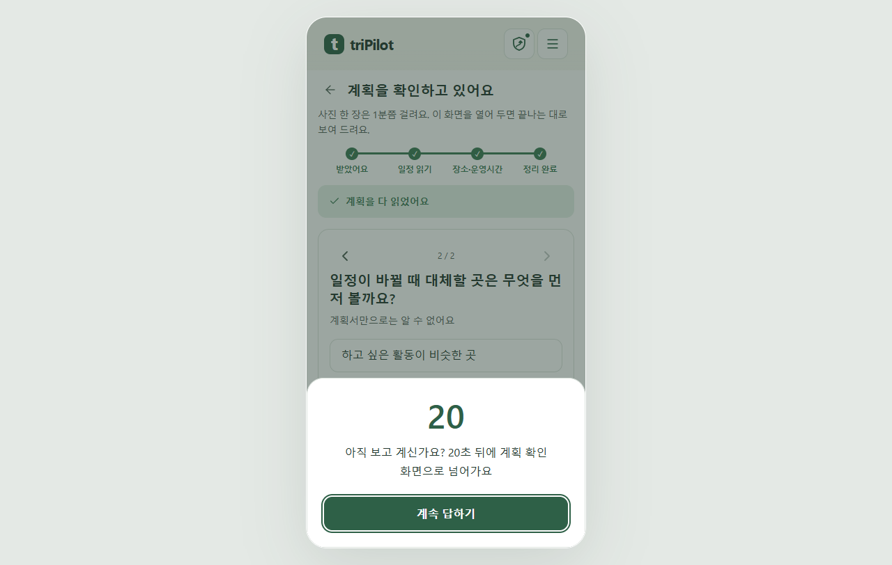

완료 계획으로 바로 이동 · 계속 답하기 통합
완료된 계획을 확인할 때 진행 단계를 다시 재생하지 않습니다. 대기 창은 ‘계속 답하기’ 하나로 합쳤으며, 누르거나 Esc로 닫으면 자동 넘김을 멈춥니다.
실제 Chrome 화면 · mock 서버 응답 · 375px / 1280px. 화면에 표시된 질문은 시험 데이터입니다.
휴대폰 화면
중복된 ‘자동으로 넘어가지 않기’를 제거했습니다. 한 버튼으로 질문에 머물며, 직접 계획 확인을 누를 때까지 자동 이동하지 않습니다.

375px · Chrome
넓은 화면
Tab·Shift+Tab은 대기 창 안에서 순환하며, 닫으면 이전 질문의 초점으로 돌아갑니다.

1280px · Chrome